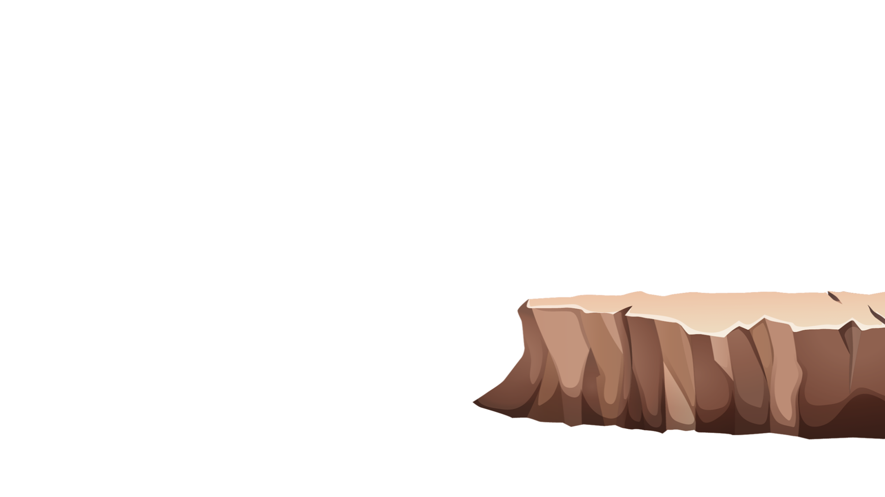
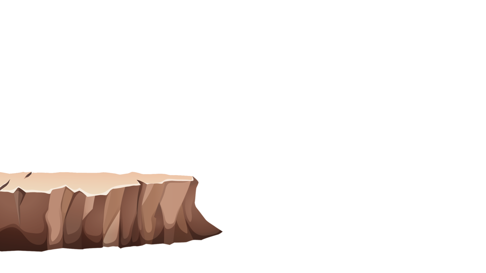
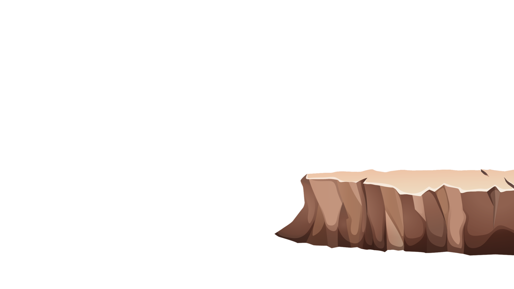
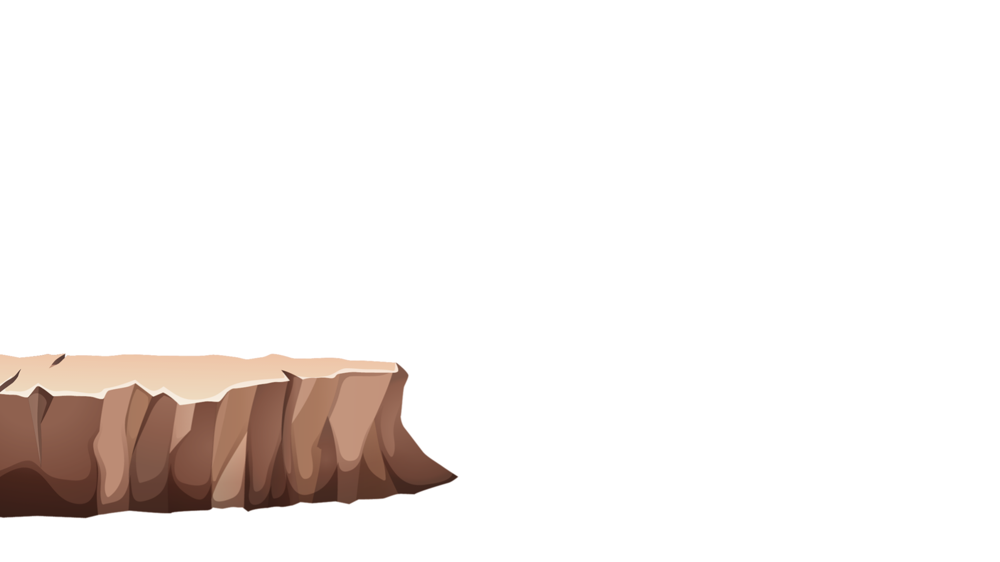
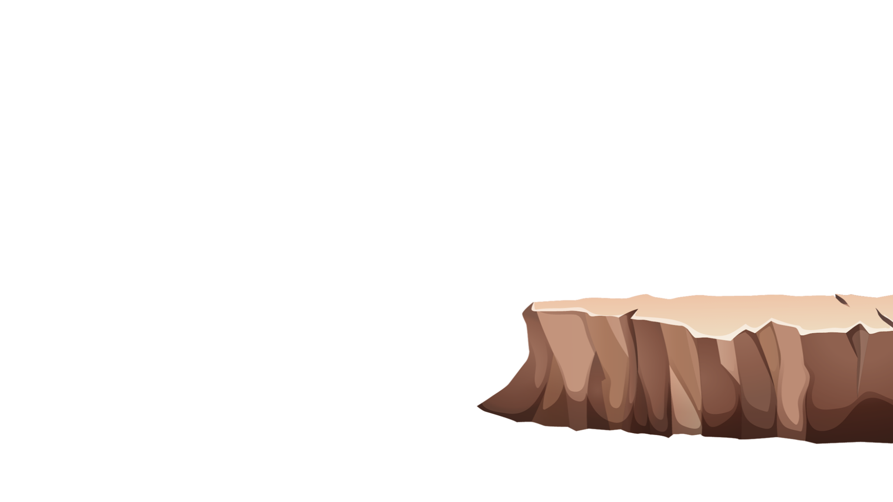
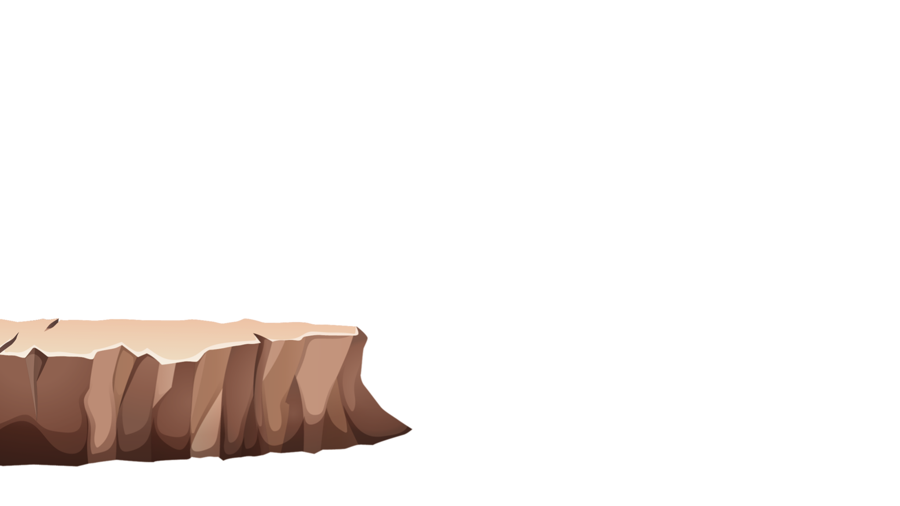
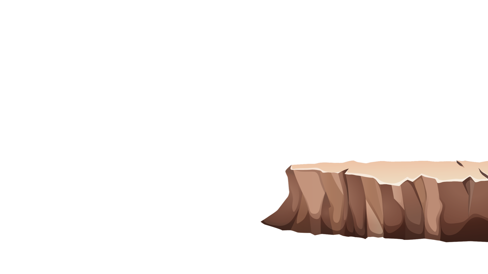
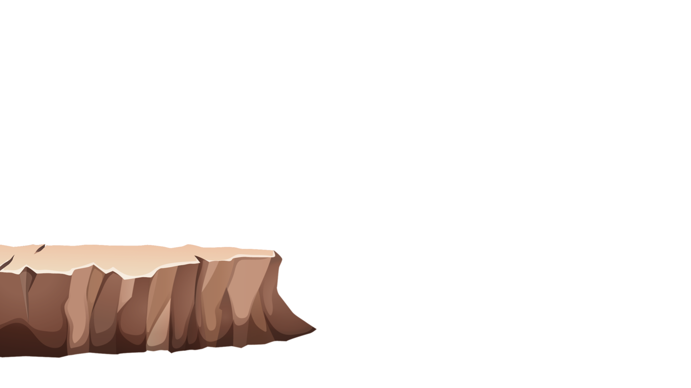

Explore


Explore


Rotasi Bumi
fenomena alam
 Explore


Explore


Rotasi Bumi adalah peredaran bumi pada poros atau sumbunya. Bumi akan bergerak dari arah barat ke timur atau terlihat bertentangan dengan arah jarum jam. Meskipun bumi mengalami peredaran, namun makhluk hidup di dalamnya tidak ikut berputar. Hal ini disebabkan adanya gravitasi bumi. Rotasi bumi akan berlangsung selama 23 jam 56 menit atau 24 jam kurang 4 menit untuk sekali putaran. Dalam peristiwa rotasi bumi ini, atmosfer yang menyelimuti bumi juga akan ikut berotasi. Perhitungan rotasi bumi dimulai sejak matahari terbit sampai dengan matahari selanjutnya terbit. Karena proses rotasi bumi ini, maka matahari yang kita lihat seperti sedang bergerak dari timur ke barat. Padahal kenyataannya matahari hanya diam saja dan yang berputar adalah planet bumi. Hal yang menarik dari terjadinya rotasi bumi adalah perputaran bumi pada porosnya memiliki kemiringan 23,5 derajat. Dengan kata lain, saat rotasi bumi tidak dalam keadaan tegak, tetapi dalam keadaan miring. Posisi miring saat berotasi disebabkan karena bumi ditabrak oleh bongkahan luar angkasa atau meteorit yang ukurannya hampir seperti ukuran planet mars. Tabrakan ini terjadi kira-kira 4 miliar tahun yang lalu atau saat bumi masih berusia sangat muda. Rotasi bumi bisa menyebabkan barbagai dampak yang dapat kita rasakan dari bumi Salah satu diantaranya adalah kita bisa menjumpai malam dan siang, meskipun panjang malam dan siang antara satu tempat dengan tempat yang lain berbeda- beda. Perputaran atau rotasi bumi ini akan semakin melambat karena pengaruh dari gaya gravitasi bulan. Pelambatan gerak gravitasi bulan ini dapat kita lihat dari melambatnya satu hari sebanyak 1,7 milidetik dibandingkan seabad yang lalu. Ada beberapa dampak dari rotasi bumi yaitu pergantian siang dan malam, perbedaan waktu antara tempat-tempat yang berbeda derajat busurnya, terjadinya pembelokan arah angin pasat, terjadinya gerak semu harian matahari, dan adanya perbedaan percepatan gravitasi.
Fenomena alam adalah peristiwa non-artifisial dalam pandangan fisika, dan kemudian tak diciptakan oleh manusia, meskipun dapat memengaruhi manusia. Contoh umum dari fenomena alam termasuk letusan gunung berapi, cuaca, dan pembusukan. Sebagian besar fenomena alam tak berbahaya seperti hujan. Fenomena alam seperti letusan gunung berapi, tsunami dan tornado dianggap berbahaya dan dapat menimbulkan kematian.Fenomena adalah hal yang luar biasa dalam kehidupan di dunia dan dapat terjadi dengan tidak terduga dan tampak mustahil dalam pandangan manusia.